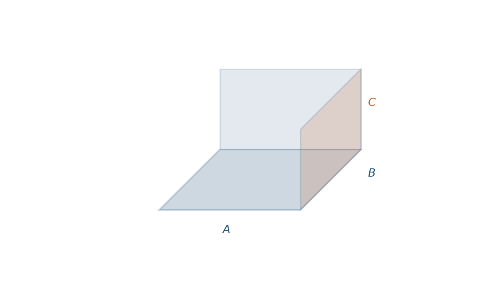
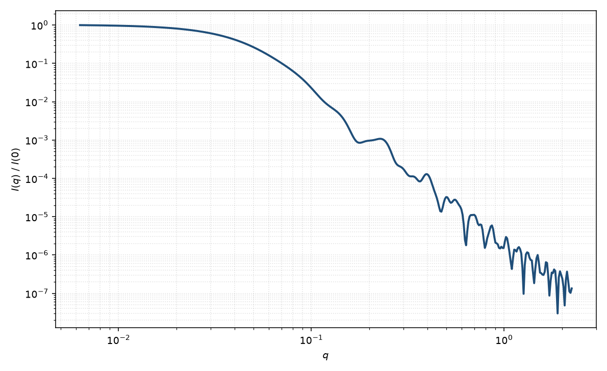

平行六面体
parallelepiped
适用场景
均匀散射长度密度的直角砖块，三条棱 $A,B,C$ 完全对等，没有预先指定的“柱轴”。适用于纳米立方/长方体、片状晶体、MOF 与卤化物钙钛矿等棱角分明的胶体。
三个边长分别在不同 $q$ 区留下特征：最长边主导 Guinier 与中间斜率，最短边主导高 $q$ 振荡。圆角立方应优先考虑超球（$p$ 有限）；光滑三轴体用椭球。立方极限 $A=B=C$ 仍比球振荡浅，因为面与棱贡献不同的相位。
本页约定：边长为全长（不是半长），夹角为直角。斜平行六面体（非正交）不在此列。
物理图像
固定取向下振幅是三个方向 $\mathrm{sinc}$ 的乘积。Mittelbach 与 Porod（1961）对欧拉角粉末平均。回转半径 $R_g^2=(A^2+B^2+C^2)/12$。
超球指数 $p\to\infty$ 时形状趋近边长 $2R$ 的立方，与 $A=B=C=2R$ 的本模型同一几何，但本页用闭式 $\mathrm{sinc}$ 积而不是超二次曲面数值积分。一轴很长时接近矩形棱柱/圆柱。
示意图


核心公式
令 $\mathrm{sinc}\,x=\sin x/x$。取向 $\mathbf{q}=(q_x,q_y,q_z)$ 下
$$F(\mathbf{q})=ABC\cdot\mathrm{sinc}\!\left(\frac{q_x A}{2}\right)\mathrm{sinc}\!\left(\frac{q_y B}{2}\right)\mathrm{sinc}\!\left(\frac{q_z C}{2}\right).$$一维粉末平均（第一卦限，权重 $\sin\theta$）
$$P(q)=\frac{\langle |F|^2\rangle_{\theta,\phi}}{|F(0)|^2}.$$稀释 $I(q)=\mathrm{scale}\cdot P(q)+B$。
参数表
| 参数 | 符号 | 含义 | 单位 | 典型范围 |
|---|---|---|---|---|
| 边长 | $A,B,C$ | 三棱全长，直角相交 | Å 或 nm | 10–2000 Å |
| 欧拉角 | $\theta,\phi,\psi$ | 棱相对光束的取向（二维） | 度 | 由取向分布约束 |
| 衬度 | $\Delta\rho$ | 均匀砖块相对溶剂 SLD 差 | Å$^{-2}$ | 组成决定 |
| 标度 / 本底 | $\mathrm{scale}$, $B$ | 前置因子与本底 | 与强度单位一致 | 实验相关 |
拟合注意
取向：一维只能粉末平均。二维各向异性（磁场、剪切、衬底）须拟合 $\theta,\phi$；棱的择优取向会给出十字形或弧向调制，勿误读成边长比。
多分散：三边都加分布会迅速抹平振荡。通常只对最长或最短边放宽度，或用单一相对宽度作用于体积等效尺度。
磁性：均匀磁化砖块的磁形式因子与核几何相同，但磁死层常沿晶面，等效磁边长可小于核边长。核磁 SLD 与核 SLD 分通道。
可辨识性：$A,B,C$ 置换不改变粉末 $I(q)$，须用约定 $A\le B\le C$ 消歧。仅 Guinier 区只能约束 $R_g$，不能分开三边。
相近模型
参考文献
- Mittelbach, P.; Porod, G. Zur Röntgenkleinwinkelstreuung verdünnter kolloider Systeme. VII. Die Berechnung der Streukurven von Parallelepipeden. Acta Phys. Austriaca 1961, 14, 185–211.
- Guinier, A.; Fournet, G. Small-Angle Scattering of X-rays. Wiley: New York, 1955.